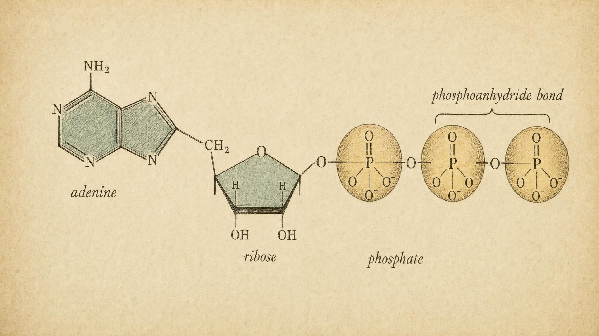
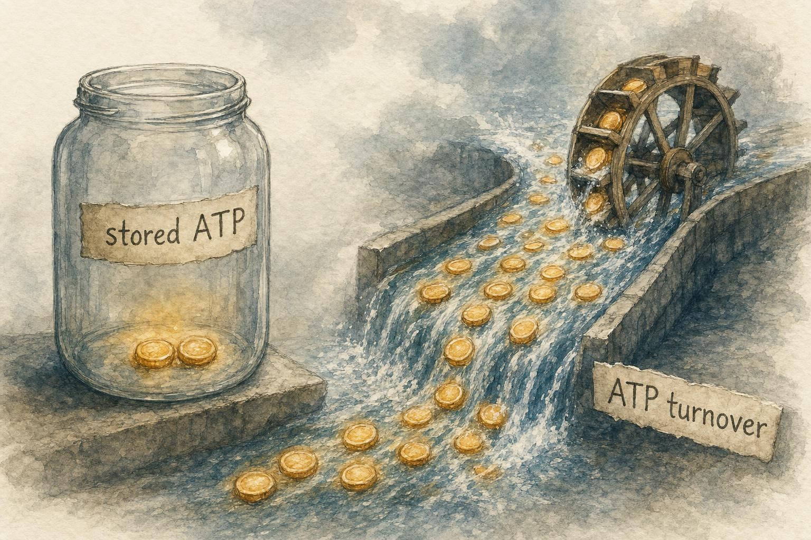

The Universal Currency: Meet the Molecule That Powers You
Every effort your body makes is paid for in the same coin, and you carry almost none of it in your pocket.
Right now, without your permission, something extraordinary is happening in every muscle, every nerve, and every gland in your body. Molecules are being spent and rebuilt at a rate that is almost impossible to imagine. Over the course of a single ordinary day, your cells will use and remake a quantity of one particular molecule that adds up to roughly your own body weight, sometimes more. And yet, if you froze time and searched your entire body for the stockpile that makes this possible, you would come up nearly empty. There is no warehouse, no reserve tank, no savings account holding a comfortable surplus.
The molecule is called adenosine triphosphate, which we will abbreviate as ATP. It is the closest thing biology has to universal money, and understanding why your body keeps so little of it is the key that unlocks this entire course. Everything we study from here forward, sprinting, breathing, recovering, even the tired burn in your legs on a hill, becomes intelligible once you grasp one strange fact: you are always broke, and you are always solvent, at the speed of milliseconds.
This chapter builds that fact from the ground up. We will take the ATP molecule apart atom by atom, examine exactly what happens when a cell spends it, correct a popular but imprecise explanation of where the usable energy actually comes from, and then confront the numbers that make ATP metabolism strange: a reserve measured in seconds, a turnover measured in kilograms per day. By the end, the rest of this course, which is really the story of three different ways the body rebuilds this currency, will feel less like a list of pathways to memorize and more like the obvious answer to a problem you now understand.
What ATP Actually Is
Let us start from the ground, assuming nothing. A molecule is simply a specific arrangement of atoms bonded together, and the identity of a molecule depends entirely on which atoms are present and how they are connected. Adenosine triphosphate is one such arrangement, and its name is a map of its parts. "Adenosine" refers to two joined components: adenine, a nitrogen-containing ring structure that also appears as one of the letters in the code of deoxyribonucleic acid, abbreviated as DNA, and ribose, a five-carbon sugar. Attach a string of three phosphate groups to that adenosine, and you have adenosine triphosphate. The prefix "tri" simply means three. A phosphate group is a phosphorus atom surrounded by oxygen atoms, and it carries a negative electrical charge (Dunn & Grider, 2023; Nelson et al., 2021).
This combination, a nitrogen-containing base joined to a sugar joined to one or more phosphate groups, is called a nucleotide, and it is one of the most reused architectures in biology. Swap the number of phosphates and you get adenosine's other forms: adenosine monophosphate, abbreviated as AMP, with one phosphate, and adenosine diphosphate, abbreviated as ADP, with two, both of which we will meet again shortly. Swap the base from adenine to one of three other nitrogen-containing rings and you get the other members of the nucleotide family: guanosine triphosphate (GTP), cytidine triphosphate (CTP), and uridine triphosphate (UTP), each of which does specialized jobs in the cell. Protein synthesis on the ribosome, for instance, spends GTP as often as it spends ATP. But ATP is produced and consumed in far greater quantity than the others, and a specific enzyme called nucleoside diphosphate kinase constantly shuttles phosphate groups between them to keep their levels in step. That is part of why ATP earns the title of universal currency while GTP, CTP, and UTP function more like specialized scrip usable only at particular counters.
ATP is not a recent theoretical construct invented by textbook authors to make a tidy analogy. It was isolated from muscle tissue and chemically characterized in 1929, during the same wave of biochemistry that also identified phosphocreatine, a related energy-storage compound we will meet in the next chapter. Long before anyone understood the mechanism this chapter is about to describe, biochemists could already see that this molecule's phosphate groups were released and replaced with unusual speed in living tissue, and that observation eventually led to the modern picture of a rapidly cycling energy currency rather than a static fuel reserve.
That charge matters more than it might first appear. The three phosphate groups are lined up one after another, and because each one is negatively charged, they repel one another the way the matching poles of two magnets do when you push them together. Holding three mutually repelling groups in a tight row is a bit like compressing a spring. There is strain built into the arrangement, and that strain is central to the whole story we are about to tell.
In a living cell, this repulsion is partly tamed. Nearly all of the ATP in your body exists not as a bare, fully negative molecule but bound to a magnesium ion, written Mg2+, which nestles between the phosphate groups and partially neutralizes their mutual repulsion. Most of the enzymes that use ATP have evolved to recognize this magnesium-bound form specifically, so when biochemists write "ATP" in a reaction, they usually mean the ATP-magnesium complex, even though the shorthand rarely spells that out (Nelson et al., 2021).
The bonds connecting the second and third phosphate groups to their neighbors have a specific chemical name: phosphoanhydride bonds. An anhydride, from the Greek for "without water," is what you get when two acid groups join together and squeeze out a molecule of water in the process. Phosphoanhydride bonds are intrinsically reactive and comparatively easy to hydrolyze, meaning to break apart by adding water back in, which is exactly the property that makes ATP a fast-acting currency rather than an inert storage form. We will return to what "reactive" does and does not mean for the energy story in the next section, because this is precisely where the popular explanation of ATP goes astray.
So why call this molecule a currency? Think about how money works in an economy. A carpenter does not pay for groceries with hours of carpentry directly, and a farmer does not settle a doctor's bill in bushels of wheat. Instead, every kind of value gets converted into one common medium, money, that anyone can accept and anyone can spend. That common medium makes an otherwise impossibly complicated web of exchanges simple. Your cells face exactly this problem. The energy locked in a bite of toast is not in a form a muscle fiber can use to contract, any more than a farmer's wheat can directly pay a surgeon. So the cell converts the energy in food into a single standard medium that every energy-requiring job in the body can accept. That medium is ATP (Alghannam et al., 2021; Nelson et al., 2021).

The anatomy of the cell's universal currency, drawn as a naturalist would draw a specimen." data-image-idx="0" style="display:block;max-width:100%;max-height:75vh;height:auto;width:auto;margin:0 auto;cursor:pointer;">The comparison to money is useful because it is honest about what ATP does and does not do. Money is not valuable because paper is intrinsically precious; it is valuable because the whole system agrees to accept it. In the same way, ATP is not important because it is a large or exotic molecule. It is important because essentially every energy-consuming process in the cell has evolved machinery that specifically recognizes and uses ATP. Pumping charged particles across membranes to fire a nerve impulse, sliding the protein filaments that shorten a contracting muscle, building new strands of DNA and ribonucleic acid, abbreviated as RNA, and manufacturing proteins all draw on the same molecule (Dunn & Grider, 2023). One currency, accepted everywhere.
The analogy has a limit worth naming so it does not mislead you later. Paper currency is arbitrary; a society could just as easily have chosen seashells or metal disks, and nothing about the chemistry of paper explains why it is valuable. ATP is not arbitrary in that way. Its usefulness comes directly from its chemical structure, from the specific strain of adjacent negative charges and the specific shape that ATP-recognizing proteins have evolved to grip. Evolution did not vote on which molecule to use as currency the way a society settles on a currency by convention; early metabolism converged on the adenine nucleotide system because that chemistry was already present and turned out to be extremely well suited to the job. Keep the money analogy for intuition, but remember that underneath it sits real, specific chemistry, not convention.
The Bond That Pays
How does a cell "spend" ATP? Here we meet the central chemical event of the whole course. When a cell needs energy for a specific job, an enzyme, which is a protein that speeds up a chemical reaction, catalyzes the addition of a molecule of water to the bond connecting the outermost phosphate group to the rest of the molecule. This reaction, called hydrolysis (from the Greek for "splitting with water"), breaks that phosphoanhydride bond. The result is that adenosine triphosphate, with its three phosphates, becomes adenosine diphosphate, abbreviated as ADP, which has only two, plus a single free phosphate group floating away on its own. That loose phosphate is called inorganic phosphate, abbreviated as Pi (Nelson et al., 2021). Written as a chemical equation, the reaction is simply: ATP plus water yields ADP plus Pi.
To talk about energy release precisely, biochemists use a quantity called Gibbs free energy, written with the symbol delta G, or ΔG, where the Greek letter delta means "change in." A reaction that releases usable energy, meaning the products end up more stable than the reactants, is called exergonic and has a negative ΔG. A reaction that requires an input of energy, leaving the products less stable, is called endergonic and has a positive ΔG. ATP hydrolysis is exergonic. Under the standardized reference conditions chemists use for comparison, meaning one molar concentrations of reactants and products, a temperature of twenty five degrees Celsius, and neutral pH, hydrolyzing one mole of ATP releases roughly thirty kilojoules per mole. But those reference conditions do not describe the inside of a real cell. Inside an actual muscle cell, ATP sits at a concentration of roughly three to eight millimolar, meaning thousandths of a mole per liter, while free ADP is held far lower, often only tens of micromolar, meaning millionths of a mole per liter, because the cell actively buffers it, and inorganic phosphate sits at roughly one to five millimolar. Because the real concentrations of the products are so much lower than the one molar reference state, the reaction is pulled further downhill than the standard value suggests, and the usable energy released by ATP hydrolysis under real cellular conditions is considerably larger in magnitude, commonly estimated at fifty to sixty kilojoules per mole, sometimes quoted as high as sixty five (Meurer et al., 2017; Nelson et al., 2021).
You have probably heard the shorthand for this idea: ATP contains "high-energy bonds," and breaking them releases energy. This phrase appears in many textbooks and is not going to disappear from common usage, so it is worth knowing precisely what it gets right and what it gets wrong, because the wrong version is one of the most persistent misconceptions in introductory biology.
Here is what it gets wrong. Breaking any chemical bond, considered strictly on its own, costs energy. This is a basic and non-negotiable fact of chemistry: a bond is a stable, lower-energy arrangement of shared electrons, and pulling two bonded atoms apart requires putting energy in to overcome that stability, not releasing energy by letting it out. If breaking bonds released energy by itself, every stable molecule in existence would spontaneously fall apart. So the idea that "the bond contains stored energy that is released when it breaks" describes something that cannot be true of an isolated bond-breaking step, and picturing the phosphoanhydride bond as a tiny loaded spring that pops when cut is a genuinely mistaken mental model, even though it is common.
Here is what actually happens, and why the overall reaction still releases a large amount of usable energy even though the bond-breaking step itself costs energy. ATP hydrolysis is not just bond breaking; it is bond breaking followed immediately by new bond formation and by a rearrangement of the whole molecular environment, and the energy accounting has to be done on the entire before-and-after picture, not on one isolated step. Three factors combine to make the products of hydrolysis, ADP and inorganic phosphate, substantially more stable than the ATP and water you started with, and it is that stability difference, not any property of the broken bond by itself, that shows up as released free energy.
First, electrostatic repulsion is relieved. Before hydrolysis, ATP crowds three or four negative charges, depending on how many of its phosphate oxygens are ionized at physiological pH, into a small region of space, and those charges push against each other, storing tension the way you would store tension by forcing two repelling magnets close together. After hydrolysis, the charges are separated onto two different, freely diffusing molecules, ADP and inorganic phosphate, and can move apart. Separating the charges lowers the overall electrostatic energy of the system.
Second, the products are stabilized by resonance. Resonance describes a situation where the true structure of a molecule is not fixed to one single arrangement of double and single bonds but is better described as a blend of several possible arrangements, which spreads out, or delocalizes, the electrons and makes the molecule more stable than any single fixed structure would be. Free inorganic phosphate has more equivalent ways to distribute its electrons across its oxygen atoms than the same phosphate group did while still tied into the ATP chain, so cutting it loose allows it to relax into a more resonance-stabilized, lower-energy form.
Third, the products are better solvated. Solvation refers to how favorably a dissolved molecule interacts with surrounding water molecules, typically through hydrogen bonding and electrical attraction. Two smaller, separately tumbling molecules, ADP and inorganic phosphate, can each be surrounded and stabilized by water more effectively than the same atoms could when fused together into one larger, more constrained ATP molecule. Better solvation lowers the energy of the products still further and also increases the entropy, or disorder, of the system, since the surrounding water molecules gain more freedom of arrangement around two small solutes than around one larger one.
Put these three effects together, relief of electrostatic strain, gain in resonance stabilization, and improved solvation, and the products sit well below the reactants in overall free energy, even though the isolated act of severing the phosphoanhydride bond was itself energetically uphill. The correct statement is therefore not "the bond stores energy that is released when broken" but rather "the overall reaction is exergonic because the products are more stable than the reactants." The phrase "high-energy phosphate bond" survives in casual use as harmless shorthand for "a bond whose hydrolysis is unusually exergonic," and used that way it is fine. Used to mean that the bond itself is a tiny warehouse of stored energy waiting to be sprung, it is a genuine misconception, and now you know how to correct it if you encounter it on an exam or in a headline (Fontecilla-Camps, 2022; Berg et al., 2019).
There is a further and even more important subtlety, and it is where the true payoff of ATP hydrolysis actually happens inside a cell. ATP hydrolysis almost never occurs in isolation just to dump heat into its surroundings. Instead, the energy-releasing breakdown of ATP is coupled to an energy-requiring job the cell needs done, meaning the two processes are mechanistically linked so that one cannot proceed without driving the other. Often the phosphate group that comes off ATP is transferred directly onto another molecule or onto the enzyme itself, a step called phosphorylation, and that transfer changes the three-dimensional shape of a protein. Those shape changes, not an invisible burst of heat, are what actually move a muscle filament, push a charged particle across a membrane, or force two molecules together that would not otherwise react.
Two examples make this concrete, and we will return to both later in this chapter. In the muscle protein myosin, binding of ATP and its subsequent hydrolysis to ADP and inorganic phosphate cocks a hinge-like region of the protein into a strained, high-energy conformation, somewhat like drawing back a catapult arm. When myosin then binds to the neighboring protein actin, release of the inorganic phosphate triggers that stored strain to snap forward, the power stroke, dragging the actin filament along and generating the force of a contraction. In the sodium-potassium pump, an enzyme embedded in nearly every cell membrane in your body, ATP hydrolysis transfers its phosphate directly onto the pump protein itself, and that phosphorylation forces the pump through a sequence of shape changes that physically ejects three sodium ions from the cell and admits two potassium ions, against both ions' concentration gradients. In neither case does the cell simply release a puff of energy into the cytoplasm and hope a nearby machine catches it. The chemistry of hydrolysis is built directly into the mechanical cycle of the protein doing the work (Fontecilla-Camps, 2022).
For the purposes of this course you can hold both truths at once: the useful shorthand mental picture is "spend one phosphate, get a packet of energy," and the deeper, mechanistically accurate reality is "spend one phosphate, drive a precisely coupled shape change in a specific protein." We will use the simpler picture most of the time because it is fast and rarely misleads, while keeping the fuller story available whenever precision matters, as it did in this section.
The Currency in Action: Three Ways ATP Gets Spent
The two examples introduced above, the myosin motor and the sodium-potassium pump, are worth slowing down on, because seeing exactly how ATP threads itself into different kinds of cellular work makes the "universal currency" idea concrete instead of abstract. Broadly, everything your cells spend ATP on falls into one of three categories: mechanical work, transport work, and biosynthetic work. Let us walk through one clear example of each.
Mechanical work: the myosin cross-bridge cycle
Skeletal muscle is built from two main protein filaments: thin filaments made mostly of a protein called actin, and thick filaments made of a protein called myosin, arranged in overlapping, repeating units. Myosin has a small globular head that can physically attach to actin, forming what is called a cross-bridge, and the repeated attachment, pulling, and release of thousands of these cross-bridges in parallel is what shortens a muscle and generates force. The cycle runs in four steps. First, a myosin head with ADP and inorganic phosphate still bound attaches to actin at an angle. Second, release of the inorganic phosphate triggers the power stroke: the head pivots and drags the actin filament a small distance, roughly ten nanometers, and ADP is released at the end of the stroke. Third, and this is the step most people do not expect, a fresh molecule of ATP, not the absence of one, binds to the myosin head and causes it to release its grip on actin entirely. Fourth, hydrolysis of that newly bound ATP to ADP and inorganic phosphate re-cocks the head into its high-energy starting position, ready to attach again. Because detachment specifically requires ATP binding, a striking consequence follows: without a continuous supply of ATP, muscle does not go limp, it locks. This is precisely the mechanism behind rigor mortis, the stiffening of skeletal muscle after death, which we will return to later in this chapter (Nelson et al., 2021).
Transport work: the sodium-potassium pump
The sodium-potassium pump, formally named the sodium-potassium adenosine triphosphatase, or Na+/K+-ATPase, sits in the outer membrane of essentially every animal cell and runs continuously, whether the cell is resting or working hard. Each cycle of the pump binds three sodium ions from inside the cell and one molecule of ATP. Hydrolysis of that ATP transfers its phosphate directly onto the pump protein, and this phosphorylation forces the pump through a shape change that expels the three sodium ions to the outside of the cell. In its new shape, the pump binds two potassium ions from outside the cell, and loss of the attached phosphate group triggers a second shape change that releases the potassium ions to the inside and resets the pump. The net result of one cycle, three sodium ions out, two potassium ions in, both against their concentration gradients, one ATP spent, maintains the electrical and chemical gradients that let nerve cells fire signals, let muscle cells respond to those signals, and let every cell maintain its proper volume and electrical charge. This single pump is estimated to consume a substantial share, by some tissue-specific estimates as much as a fifth to a third, of resting ATP turnover in excitable tissues such as brain and nerve, which tells you something about how expensive it is to continuously maintain a gradient rather than to build one once and leave it alone (Hargreaves & Spriet, 2020; Rolfe & Brown, 1997).
Biosynthetic work: building a protein
Building new molecules is the third great category of ATP spending, and protein synthesis is one of its most expensive examples. Assembling a single peptide bond, the link that joins one amino acid to the next in a growing protein chain, is not paid for directly out of ATP at the ribosome, the cellular machine that reads genetic instructions and manufactures proteins. Instead the cost is paid in stages: activating each amino acid by attaching it to a carrier molecule called transfer RNA consumes the equivalent of two high-energy phosphate bonds from ATP, and the physical steps of positioning that amino acid on the ribosome and moving the ribosome forward along the messenger RNA template consume two further high-energy phosphate bonds, these paid not from ATP directly but from its close relative GTP, which as noted earlier is kept in step with ATP levels by phosphate-shuttling enzymes. Multiply this cost, roughly four high-energy phosphate bonds, by the hundreds of amino acids in a typical protein and by the enormous number of protein molecules a busy cell manufactures every day, and it becomes clear why biosynthesis, not just movement, is one of the major line items in the body's energy budget. A liver cell manufacturing digestive enzymes, or an immune cell rapidly dividing to fight an infection, can spend a striking fraction of its ATP budget simply building the proteins and nucleic acids it needs, with no muscle contraction involved at all (Nelson et al., 2021).
The Surprise: You Store Almost None of It
Now for the fact that gives this course its reason to exist. Given how central ATP is, you might reasonably expect the body to hoard it, the way a prudent household keeps months of savings in the bank. It does the opposite. The concentration of ATP inside a resting muscle cell is remarkably small, and it is held within a narrow range that barely changes even when the muscle is working hard. Careful measurements across a wide range of animals, from mammals to insects, made this clear decades ago: intramuscular ATP levels are tightly regulated and universally modest, typically only a few units of ATP per unit of tissue, no matter the creature or the muscle's job (Beis & Newsholme, 1975).
How do we even know these numbers? Two methods, developed decades apart, converge on the same picture. The older method is the muscle biopsy: a small needle sample of tissue is frozen within a second or two of removal to stop metabolism in its tracks, and the frozen sample is later analyzed chemically for its ATP, ADP, and phosphocreatine content. The newer method, developed from the 1970s onward, is phosphorus nuclear magnetic resonance spectroscopy, often abbreviated as 31P-MRS, which uses the magnetic properties of phosphorus atoms to measure the concentration of ATP, phosphocreatine, and inorganic phosphate inside living muscle, painlessly and continuously, while a person actually exercises inside a scanner. The fact that needle biopsies from decades ago and noninvasive scans since then agree on the same tiny, tightly held ATP concentration is part of why physiologists treat this number with confidence rather than dismissing it as an artifact of one clumsy technique.
The tiny reserve and the ferocious turnover are not unique to skeletal muscle, though skeletal muscle is where the numbers are easiest to picture because its ATP demand swings so dramatically between rest and sprinting. Heart muscle keeps an even less forgiving margin, because it can never stop to rest the way a skeletal muscle can between contractions; a heart that ran out of ATP for even a few seconds would stop beating, which is precisely why heart muscle cells are packed with an unusually high density of mitochondria, the oxygen-using organelles (structures inside a cell that carry out particular jobs) that regenerate ATP most efficiently. The brain, too, is a demanding customer: despite making up roughly two percent of body mass, it accounts for a disproportionate share of resting ATP turnover, most of it spent running ion pumps like the sodium-potassium pump described above, simply to keep neurons ready to fire. At the other extreme, mature red blood cells discard their mitochondria entirely during development and can only make ATP through one of the three pathways introduced later in this chapter, a limitation that shapes everything about how they function. The details differ by tissue, but the underlying rule holds everywhere: a small, closely guarded reserve, replaced continuously, rather than a comfortable stockpile.
How small is small, in terms you can feel? During all-out maximal effort, the ATP already sitting inside a muscle would be enough to power roughly two seconds of work before it ran out (Alghannam et al., 2021). In the most intense contractions the muscle can produce, the stored ATP would be gone in less than a single second if nothing replaced it (Greenhaff & Timmons, 1998). Read that again. If your existing ATP were all you had, a sprint would end before you finished your first stride, and the sprint would end not because you chose to stop but because there would be no molecular currency left to pay the muscle.
Let us return to the money analogy to feel the strangeness of this. Imagine an economy where the total amount of cash in existence at any instant could cover only the next two seconds of all transactions everywhere. That sounds like a recipe for immediate collapse. And yet the body runs this way on purpose, and it works beautifully. To make sense of that, we need to understand that the number that matters is not how much ATP you store but how fast you can remake it.

The reserve is tiny; the throughput is enormous. Metabolism is about flow, not storage." data-image-idx="1" style="display:block;max-width:100%;max-height:75vh;height:auto;width:auto;margin:0 auto;cursor:pointer;">Here is the resolution to the paradox. Across a full day of ordinary living, the cells of your body hydrolyze somewhere between one hundred and one hundred fifty moles of ATP (Dunn & Grider, 2023). A mole is just a chemist's counting unit, an enormous fixed number of molecules, and the mass of that much ATP works out to roughly the mass of your entire body. So you spend about your own body weight in ATP every day, while carrying only a couple of seconds' worth at any moment. The only way both statements can be true is if each individual molecule of ATP is spent and rebuilt over and over, thousands of times per day. The currency is not stockpiled; it is recirculated at breathtaking speed.
We can make the body-weight comparison completely concrete. One mole of ATP, that chemist's counting unit representing a fixed and enormous number of molecules, has a mass of a little over five hundred grams. If a person hydrolyzes and resynthesizes on the order of one hundred to one hundred fifty moles of ATP across an ordinary day, as estimated from whole-body energy expenditure, that works out to somewhere in the neighborhood of fifty to seventy five kilograms of ATP turned over daily, which lines up with the common claim that we cycle through roughly our own body weight in ATP every day (Dunn & Grider, 2023; Rolfe & Brown, 1997). Because the standing pool of ATP in the whole body at any given instant is only on the order of a few tens of grams, each molecule of ATP must, on average, be spent and rebuilt somewhere between one thousand and two thousand times over the course of a single day. That number is the mathematical fingerprint of a system built entirely around flow rather than storage.
The Spend-and-Rebuild Cycle
We now arrive at the single idea that the rest of this course is built to explain. Because ATP cannot be stockpiled, the body cannot rely on a reserve; it must instead continuously rebuild ATP as fast as it spends it. This continuous rebuilding is called resynthesis. The cycle is simple to state. ATP is hydrolyzed to ADP plus inorganic phosphate, releasing energy that does a job. Then, using energy captured from food, the cell reattaches an inorganic phosphate to ADP, turning it back into ATP, ready to be spent again. Spend, rebuild, spend, rebuild, the same molecules cycling around and around thousands of times (Nelson et al., 2021; Hargreaves & Spriet, 2020).
Notice the direction of energy flow. Spending ATP releases energy; that step happens readily and downhill, so to speak. Rebuilding ATP requires energy; you have to force the phosphate back onto ADP against the very charge repulsion that made the molecule such a good energy carrier in the first place. That uphill rebuilding step is exactly where the energy from food goes. This is the deepest possible answer to a question you may never have thought to ask: why do we eat? At the level of the cell, we eat in order to rebuild ATP. Food is not burned for work directly. Food energy is captured and used to run the resynthesis half of the cycle (Alghannam et al., 2021; Dunn & Grider, 2023).
This reframing is worth dwelling on because it quietly corrects a picture many people carry. It is tempting to imagine that a muscle "burns" the sandwich you ate, converting food straight into motion the way an engine burns gasoline. But the cell inserts a mandatory middle step. Food is converted into ATP, and only ATP is spent on the work. The sandwich never touches the muscle filaments. Its energy arrives only after it has been minted into the universal currency.
There is a second, faster safety valve that operates on an even shorter timescale than the three resynthesis pathways introduced below, and it is worth naming here because it illustrates just how seriously the cell treats ATP scarcity. An enzyme called adenylate kinase catalyzes a reaction that shuffles phosphate between two molecules of ADP: two ADP react to form one ATP and one adenosine monophosphate, abbreviated as AMP, the further-dephosphorylated relative of ATP and ADP. This reaction does not create new energy from nowhere; it simply redistributes phosphate groups that are already on hand, buying the cell a few extra ATP molecules instantly, within a fraction of a second, while the slower resynthesis pathways ramp up. The byproduct, AMP, is not incidental. Because AMP only accumulates once ADP has already built up, meaning ATP is already being spent faster than it is being replaced, rising AMP is one of the most sensitive alarm signals available to the cell. An enzyme called AMP-activated protein kinase, abbreviated as AMPK, senses rising AMP directly and, in response, switches on the enzymes of the ATP-resynthesizing pathways while switching down competing, non-urgent energy-consuming processes. In effect, the cell has built a smoke detector directly into its own currency system: the moment ADP starts turning into AMP, that chemical shift itself triggers the response, faster than any external nervous or hormonal signal could arrange it (Hargreaves & Spriet, 2020).
Biochemists have a formal way of describing how "charged" this whole adenine nucleotide pool is at any moment, called the energy charge, a concept introduced by the biochemist Daniel Atkinson in 1968. It is calculated from the relative amounts of ATP, ADP, and AMP present, with ATP counted fully, ADP counted at half weight because it is only "half spent," and AMP not counted at all, so a cell running on pure ATP would have an energy charge of 1.0 and a cell that had converted everything to AMP would have an energy charge of 0. A healthy resting cell typically sits at an energy charge of roughly 0.85 to 0.95, and cells regulate their own metabolism to defend that narrow range with remarkable precision, speeding up ATP-generating pathways the moment the charge starts to slip and slowing them down once it is restored (Atkinson, 1968). This single number, more than the absolute quantity of ATP present, is what the cell is really watching and defending at every moment.
Because the reserve is so small, the resynthesis machinery cannot rest. From the calm of sitting still to the strain of an all-out effort, the rate at which your cells turn over ATP can rise by roughly one hundredfold (Alghannam et al., 2021). The body must match the supply of freshly rebuilt ATP to the demand of the moment, instant by instant, and it must do so whether that demand jumps suddenly, as when you leap to catch a falling glass, or climbs slowly, as over the miles of a long walk. Matching a wildly variable demand to a nearly fixed and tiny reserve is the central engineering problem your metabolism solves every second you are alive.
How does the body pull this off? Not with a single method, but with three, and the existence of exactly three, rather than one perfect all-purpose system, is itself a clue about the underlying engineering problem. No single pathway can be simultaneously the fastest, the largest in capacity, and the most fuel-efficient, so the muscle instead runs three systems with complementary strengths side by side. The first breaks down a stored high-energy compound called phosphocreatine to regenerate ATP almost instantly, trading enormous speed for a capacity that lasts only a few seconds. The second, called glycolysis, rapidly breaks down carbohydrate without requiring oxygen, trading somewhat less speed for roughly a minute or two of high capacity. The third, oxidative phosphorylation, uses oxygen to extract far more energy from carbohydrate and fat inside the mitochondria, trading speed for the ability to sustain effort for hours. These three pathways are not alternatives the body picks between; they are continuously and simultaneously active, blending their fractional contributions according to how hard and how long you are working, a blend that shifts smoothly rather than switching like a light switch (Hargreaves & Spriet, 2020; Greenhaff & Timmons, 1998). They are the three main characters of this course, and each of the next three chapters is devoted to one of them.
You are also now equipped to see through one of the most persistent myths in fitness folklore before we even reach it. You may have heard that the burning ache during hard exercise, or the soreness you feel a day or two later, is caused by "lactic acid." We will examine this claim carefully in a later chapter, but notice already that it does not fit the picture we have built. Lactate is a byproduct of one of the resynthesis pathways, not a poison and not the cause of next-day soreness. Keeping the spend-and-rebuild framework front of mind will let you evaluate such claims on their evidence rather than their popularity.
Why the Scarcity Is a Feature, Not a Flaw
It would be easy to read all of this as a design defect. Why not simply hold a large reserve of ATP and avoid the frantic rebuilding altogether? The comparative evidence suggests the small reserve is not an accident but a solution. Across species and muscle types, ATP concentration is kept low and stable, buffered by the phosphagen system that operates near chemical equilibrium precisely so that ATP levels barely wobble even under heavy demand (Beis & Newsholme, 1975). Several reasons converge on this arrangement.
First, ATP is metabolically expensive to make and chemically restless once made; storing large quantities would tie up a great deal of raw material in a molecule that also participates in signaling and in dozens of reactions where its concentration must be read precisely. Second, and more elegantly, the relative amounts of ATP, ADP, and a further breakdown product called adenosine monophosphate, abbreviated as AMP, act as a kind of dashboard gauge that tells the cell how hard it is working. When ATP dips and ADP and AMP rise, that shift is itself the signal that switches on the resynthesis pathways (Beis & Newsholme, 1975; Hargreaves & Spriet, 2020). A cell drowning in stored ATP would be a cell that had blinded itself to its own energy status. The near-empty tank is what keeps the gauge sensitive.
There is also a straightforward physical cost to storing large amounts of any charged molecule that is worth naming. Dissolved, electrically charged particles, including ATP and its relatives, contribute to a cell's osmotic pressure, the tendency of water to move across a membrane toward the side with a higher concentration of dissolved particles. A cell that hoarded a large surplus of ATP would be accumulating osmotic pressure it did not need, drawing in extra water and risking swelling, simply as a side effect of playing it safe. Keeping the standing pool small avoids paying that physical tax every hour of every day, in exchange for paying a metabolic tax of constant resynthesis instead, and the cell's evolutionary history has clearly settled on the second bargain as the better one.
A useful modern comparison is the manufacturing strategy known as just-in-time production, popularized by Japanese automakers in the twentieth century, in which a factory keeps deliberately minimal stockpiles of parts on hand and instead times deliveries to arrive right before they are needed. The strategy looks fragile on paper, since a single delayed shipment could halt the assembly line, but it is enormously efficient when the supply chain is fast and reliable, because capital is not tied up sitting idle in a warehouse and the whole system stays responsive to changes in demand. Muscle cells run a biological version of the same strategy with ATP: no warehouse, tight coupling between demand and delivery, and total reliance on the resynthesis pathways being fast and reliable enough to keep pace. The comparison is not perfect, no analogy is, but it captures why an engineer looking at the tiny ATP reserve would not necessarily call it fragile; used correctly, "lean" and "fragile" are not the same thing.
The gauge function of the ATP to ADP and AMP ratio is not just a general principle; it operates through specific, well-characterized molecular switches. One of the clearest examples is an enzyme early in the glycolysis pathway called phosphofructokinase, which controls the rate at which glucose is committed to breakdown for energy. Phosphofructokinase is directly inhibited when ATP levels are high and directly activated when AMP levels rise, which means the very enzyme that determines how fast one of the resynthesis pathways runs is wired to read the ATP to AMP ratio as its primary instruction. When the currency starts running low, this enzyme, among many similarly wired throughout metabolism, responds within seconds, without waiting for any hormone or nerve signal to arrive (Nelson et al., 2021; Berg et al., 2019). This is the concrete molecular mechanism behind the more general claim that a near-empty ATP reserve keeps the whole system sensitive and responsive.
So the scarcity that first looked alarming turns out to be the very thing that makes rapid, responsive, finely regulated energy supply possible. Living paycheck to paycheck at the speed of milliseconds is not the body's weakness. It is the body's control system. And it is the reason that everything in the remaining chapters, the three resynthesis pathways and the rules that govern when each one dominates, matters so much. When you cannot save, how you earn becomes everything.
When the Currency Runs Out
Understanding what ATP scarcity means in ordinary life is one thing. Seeing what happens when the resynthesis machinery actually fails is another, and it makes the stakes of this chapter vivid rather than abstract. Two clear examples, one everyday and inevitable, one rare and toxic, show what the loss of ATP resynthesis actually looks like at the level of tissue and organ.
Rigor mortis: the lock, not the limp
Rigor mortis, the stiffening of the body's skeletal muscles that begins a few hours after death, is often described loosely as muscles "freezing up," but the mechanism is precise and it follows directly from the cross-bridge cycle described earlier in this chapter. Recall that a myosin head releases its grip on actin only when a fresh molecule of ATP binds to it; without that fresh ATP, the myosin head stays locked onto actin in the attached, rigid configuration. After death, blood flow and oxygen delivery stop, the three resynthesis pathways shut down one after another as their fuel and oxygen run out, and the small remaining pool of ATP is quickly exhausted and cannot be replaced. Every cross-bridge that happens to be attached at that point stays attached, because there is no ATP left to bind and trigger release, and the muscle locks into a rigid state rather than going limp. Rigor mortis, in other words, is not the absence of a signal to contract; it is the absence of the specific molecule needed to let go. The stiffness resolves only hours later, as cellular enzymes begin to break down the muscle proteins themselves during decomposition, not because ATP returns.
Cyanide and the collapse of oxidative resynthesis
A second, more clinically urgent example is cyanide poisoning, which illustrates what happens when the body's largest-capacity resynthesis pathway, oxidative phosphorylation, is deliberately blocked. Cyanide binds tightly to a component of the electron transport chain inside mitochondria called cytochrome c oxidase, also known as complex four, the enzyme responsible for the final step of passing electrons to oxygen, the step that oxidative phosphorylation depends on to regenerate large quantities of ATP. With that step blocked, mitochondria throughout the body lose the ability to use oxygen at all, even though oxygen is still being delivered by the blood in normal amounts, and cells are forced to rely entirely on the much lower capacity glycolysis pathway for ATP resynthesis. The tissues that fail first and most catastrophically are exactly the ones this chapter has already flagged as having the least tolerance for an ATP shortfall: the heart, which cannot stop to rest, and the brain, which spends an outsized share of its energy budget on ion pumps that cannot be paused even briefly without losing the electrical gradients neurons depend on. This is why cyanide poisoning is so rapidly dangerous compared with poisons that act more slowly elsewhere in the body: it does not damage tissue directly so much as it cuts off the currency supply to the tissues that can least survive without it.
Cramp and fatigue: an honest note on what we do not fully know
It is tempting to reach for a similarly tidy story about the burning sensation of hard exercise or the soreness felt a day or two later, attributing both to a straightforward ATP or byproduct shortage. Here honesty requires slowing down. As this chapter already noted, the old idea that "lactic acid" itself causes the burn or the next-day soreness does not hold up, and a later chapter examines why in detail. But the more modern replacement explanations, involving local shifts in inorganic phosphate, hydrogen ion accumulation, and the buildup of other metabolic byproducts during intense effort, remain an active area of research, and different lines of evidence do not yet agree on a single complete mechanism for either the in-the-moment burn or the days-later soreness known as delayed onset muscle soreness. The honest position, and the one this course will keep returning to, is that fatigue and soreness are real, multi-causal phenomena that connect to the ATP economy described in this chapter, without yet being fully explained by any single tidy story. Resist any explanation, including ones that sound authoritative, that claims to have the entire answer in one sentence.
Because the intramuscular store of adenosine triphosphate is small and closely defended, the muscle survives not by holding a reserve but by regenerating its currency as fast as it is spent.
Synthesis of Beis and Newsholme (1975) and Hargreaves and Spriet (2020)
Key Takeaways
- Adenosine triphosphate, abbreviated as ATP, is the cell's universal energy currency: nearly every energy-requiring job in the body has evolved to accept and spend this one molecule.
- ATP is "spent" by hydrolysis, which breaks a phosphoanhydride bond and removes the outermost phosphate to yield adenosine diphosphate (ADP) plus inorganic phosphate (Pi), making usable energy available to drive a coupled job.
- Breaking a chemical bond, on its own, always costs energy; it never releases it. ATP hydrolysis is exergonic overall because the products, ADP and Pi, are more stable than the reactants, due to relieved electrostatic repulsion, resonance stabilization, and better solvation, not because the bond itself was a store of energy.
- The phrase "high-energy phosphate bond" is acceptable shorthand for "a bond whose hydrolysis is unusually exergonic," but is a genuine misconception if taken to mean the bond itself contains stored energy waiting to be sprung.
- ATP does its real work not by releasing a puff of energy into the cytoplasm but by phosphorylating proteins and driving precise, coupled shape changes, as seen in the myosin cross-bridge cycle, the sodium-potassium pump, and the machinery of protein synthesis.
- The body stores only about two seconds' worth of ATP for maximal effort, yet it spends roughly its own body weight in ATP each day, so every molecule must be recycled somewhere between one thousand and two thousand times daily.
- Because ATP cannot be stockpiled, cells must continuously rebuild it. Food is not burned directly for work; food energy is used to reattach phosphate to ADP, regenerating ATP.
- The small, tightly held reserve is a control feature: the energy charge, based on the ratio of ATP to ADP and AMP, acts as the gauge that AMP-activated protein kinase and enzymes like phosphofructokinase read to switch resynthesis on, and three pathways share the job of keeping supply matched to demand.
- Rigor mortis and cyanide poisoning show concretely what happens when ATP resynthesis fails, reinforcing why continuous resynthesis, not storage, is the strategy life depends on.
If you cannot store the currency, you must earn it fast. In the next chapter we meet the quickest of the three resynthesis systems, the one that rebuilds ATP almost instantly from a small on-hand supply of phosphocreatine. It is the system that buys you those first explosive seconds, from a heavy first rep to the launch of a sprint, and its speed comes at the price of a capacity that runs out fast. Understanding why will feel like the inevitable next answer to the question this chapter has planted.
References
Alghannam, A. F., Ghaith, M. M., & Alhussain, M. H. (2021). Regulation of energy substrate metabolism in endurance exercise. International Journal of Environmental Research and Public Health, 18(9), 4963. https://doi.org/10.3390/ijerph18094963
Atkinson, D. E. (1968). The energy charge of the adenylate pool as a regulatory parameter. Interaction with feedback modifiers. Biochemistry, 7(11), 4030-4034. https://doi.org/10.1021/bi00851a033
Beis, I., & Newsholme, E. A. (1975). The contents of adenine nucleotides, phosphagens and some glycolytic intermediates in resting muscles from vertebrates and invertebrates. Biochemical Journal, 152(1), 23-32. https://doi.org/10.1042/bj1520023
Berg, J. M., Tymoczko, J. L., Gatto, G. J., & Stryer, L. (2019). Biochemistry (9th ed.). W. H. Freeman.
Dunn, J., & Grider, M. H. (2023). Physiology, adenosine triphosphate. In StatPearls. StatPearls Publishing. https://www.ncbi.nlm.nih.gov/books/NBK553175/
Fontecilla-Camps, J. C. (2022). The complex roles of adenosine triphosphate in bioenergetics. ChemBioChem, 23(9), e202200064. https://doi.org/10.1002/cbic.202200064
Greenhaff, P. L., & Timmons, J. A. (1998). Interaction between aerobic and anaerobic metabolism during intense muscle contraction: Skeletal muscle energy metabolism and fatigue during intense exercise in man. Exercise and Sport Sciences Reviews, 26, 1-30. https://pubmed.ncbi.nlm.nih.gov/1842855/
Hargreaves, M., & Spriet, L. L. (2020). Skeletal muscle energy metabolism during exercise. Nature Metabolism, 2(9), 817-828. https://doi.org/10.1038/s42255-020-0251-4
Meurer, F., Bobrownik, M., Sadowski, G., & Held, C. (2017). Standard Gibbs energy of metabolic reactions: II. Glucose-6-phosphatase reaction and ATP hydrolysis. Biophysical Chemistry, 223, 30-38. https://doi.org/10.1016/j.bpc.2017.02.005
Nelson, D. L., Cox, M. M., & Hoskins, A. A. (2021). Lehninger principles of biochemistry (8th ed.). Macmillan Learning.
Rolfe, D. F. S., & Brown, G. C. (1997). Cellular energy utilization and molecular origin of standard metabolic rate in mammals. Physiological Reviews, 77(3), 731-758. https://doi.org/10.1152/physrev.1997.77.3.731